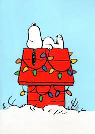

<!DOCTYPE html>
<html lang="en"></html>
<head>
    <meta charset="UTF-8">
    <title>My Resume</title>
</head>
<body> 
    <H1> My Resume</H1>
    <h2> E. Edgecomb</h2>
    
 
    <hr />
<h2> Summary</h2>
Welcome to my resume where I show off all my amazing skills and how I'm so much better than all other applicants!
<hr />
<h2> Education</h2>
<li>Bachelor of Science: Business Administration 	 
    <ul> Strayer University: (June 2019 )</ul>
</li>
<li> Associate : Business Administration (May 2016) 
    <ul> Staryer University: (May 2016)</ul>
</li>
<hr />
<h2> Work Experience</h2>
    <li> Verizon Wireless: 2005 - 2024
        <ul> Workforce Management Analyst</ul>
        <li>Handled all schedule-related requests, including PTO, shift swaps and overtime.</li>
        <li> Created and maintained team consistent outbound communication templates using Docs reducing WFM handling time and repeat communications by 22%</li>    
        <li>Tracked and managed VCG mobile team's exception and absence reporting for various compliance, customer and employee experience department and organizational goals.</li>
        <li>WFPA subject matter expert in educating frontline and leaders with absence policies for VCG mobile, using enhanced knowledge of Managing Your Time off Guidelines, Verint coding, Schedule Manager, National Attendance Tool and VZTime. </li>
        <li>Sole team administrator for CCI knowledge base, responsible for adding, updating, and maintaining documentation of all CCI policies and procedures.</li>
        <li>Green belt project owner for make up time variance project resulting in over 2,000 saved hours and 
            $21,000 in saved labor costs.</li>      
    </li>
<hr />
<h2>Skills</h2>
<li> Analytical Thinking⭐️⭐️⭐️⭐️⭐️</li>
<li> Root Cause Analysis⭐️⭐️⭐️⭐️</li>
<li>Agile Methodologies ⭐️⭐️⭐️⭐️</li>
<li> Problem-solving⭐️⭐️⭐️⭐️⭐️</li>
<li>Workflow Management ⭐️⭐️⭐️⭐️⭐️</li>
<hr />
<h2> Other</h2>
<ul>
<li><a href="./contact.html"> Contact Me</a></li>
<li><a href="./Awards.html"> Awards</a></li>
</ul>
<footer>
    <p>© E.Edgecomb. All rights reserved.</p>
</footer>
</body>